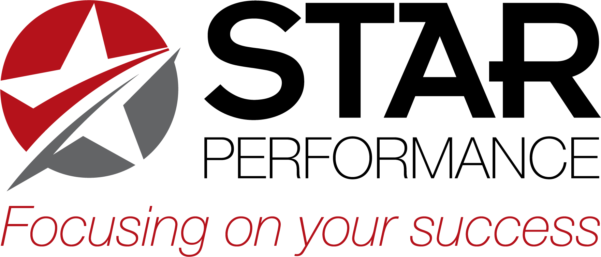

Sales Objection Handling Trainer
Practice difficult conversations the STAR Performance way.
This Scenario
Goal
Build trust, explore needs, manage price & timing concerns, and confidently Earn the close using STAR.
STAR Performance Hints
Use the STAR model to keep the conversation moving toward a decision:
- Seek – Open with curiosity. Ask about goals, current situation, and what “success” looks like.
- Ask – Ask focused questions to uncover true objections (price, timing, risk, decision maker, etc.).
- Leverage – Connect your solution to what they value most: outcomes, ROI, reduced risk, or time saved.
- Earn – Earn the right to ask for the business by summarizing fit and checking for alignment.
- Serve – Help them decide. Offer clear next steps that make it easy to move forward.
As you click responses below, notice how each option reflects (or ignores) Seek, Ask, Leverage, Earn, and Serve.
Your Name (for leaderboard):
Choose Your Response:
Live Coaching Hint
Weekly Trial Leaderboard
Trials run Friday 12:00 a.m. through Thursday 11:59 p.m. Your first score of each trial is locked in.
You can replay for practice, but only your first score counts on the leaderboard.